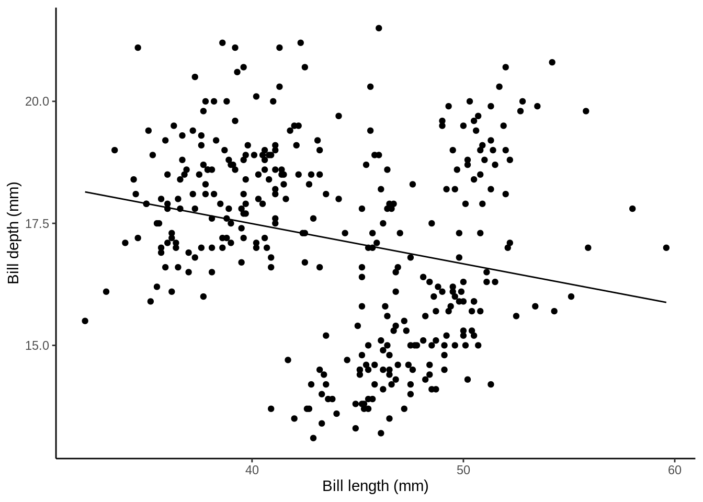
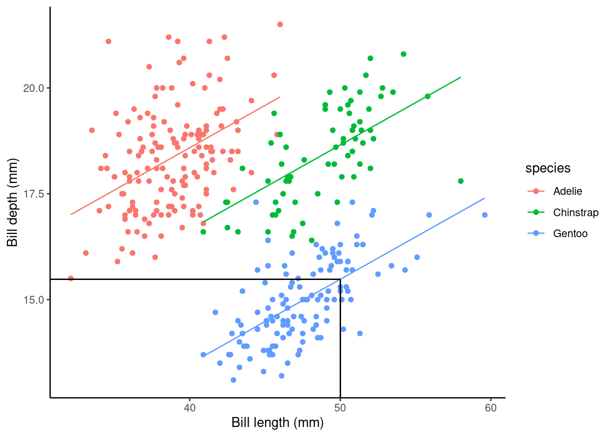
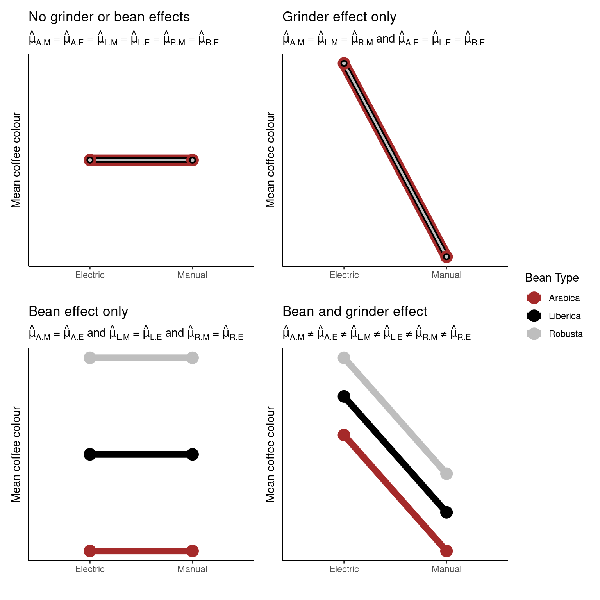
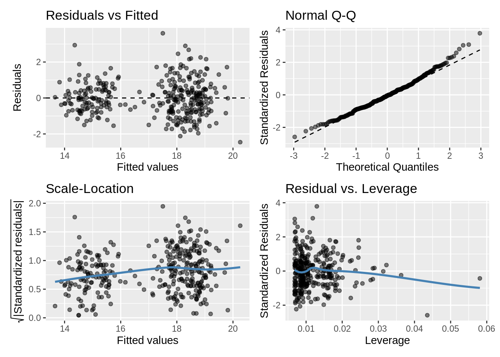

10 Statistical Inference
10.1 Learning Objectives
- Carry out and interpret tests for the existence of relationships between explanatory variables and the response in a linear model
- Write R code to fit a linear model with a single continuous explanatory variable
- Write R code to fit a linear model with a continuous explanatory variable and a factor explanatory variable
- Interpret estimated effects with reference to confidence intervals from linear regression models. Specifically the interpretation of
- the intercept
- the effect of a factor
- the effect of a one-unit increase in a numeric variable
- the effect of an x-unit increase in a numeric variable
- Make a point prediction of the response for a new observation
- Write R code to fit a linear model with interaction terms in the explanatory variables
- Interpret estimated effects with reference to confidence intervals from linear regression models. Specifically the interpretation of
- main effects in a model with an interaction
- the effect of one variable when others are included in the model
- Explain why you may want to include interaction effects in a linear model
- Describe the differences between the operators
:and*in anRmodel-fitting formula
10.2 Regression

10.2.1 Some mathematical notation
Let's consider a linear regression with a simple explanatory variable:
\[Y_i = \alpha + \beta_1x_i + \epsilon_i\] where
\[\epsilon_i \sim \text{Normal}(0,\sigma^2).\]
Here for observation \(i\)
- \(Y_i\) is the value of the response
- \(x_i\) is the value of the explanatory variable
- \(\epsilon_i\) is the error term: the difference between \(Y_i\) and its expected value
- \(\alpha\) is the intercept term (a parameter to be estimated), and
- \(\beta_1\) is the slope: coefficient of the explanatory variable (a parameter to be estimated)
Does this remind you of anything?

10.2.2 Modeling Bill Depth
Remember the penguins from Chapter 2?

Key assumptions
- Independence
- There is a linear relationship between the response and the explanatory variables
- The residuals have constant variance
- The residuals are normally distributed
library(tidyverse)
library(palmerpenguins)
penguins_nafree <- penguins %>% drop_na()ggplot(data = penguins_nafree, aes(x = bill_depth_mm)) +
geom_histogram() + theme_classic() +
xlab("Bill depth (mm)")
First off let's fit a null (intercept only) model. This in old money would be called a one sample t-test.
slm_null <- lm(bill_depth_mm ~ 1, data = penguins_nafree)
summary(slm_null)$coef## Estimate Std. Error t value Pr(>|t|)
## (Intercept) 17.16486 0.1079134 159.0614 1.965076e-315Model formula
This model, from above, is simply \[Y_i = \alpha + \epsilon_i.\]
Here for observation \(i\) \(Y_i\) is the value of the response (bill_depth_mm) and \(\alpha\) is a parameter to be estimated (typically called the intercept).
Inference
The (Intercept) term, 17.1648649, tells us the (estimated) average value of the response (bill_depth_mm), see
penguins_nafree %>% summarise(average_bill_depth = mean(bill_depth_mm))## # A tibble: 1 x 1
## average_bill_depth
## <dbl>
## 1 17.2The SEM (Std. Error) = 0.1079134.
The hypothesis being tested is \(H_0:\) ((Intercept) ) \(\text{mean}_{\text{`average_bill_depth`}} = 0\) vs. \(H_1:\) ((Intercept)) \(\text{mean}_{\text{`average_bill_depth`}} \neq 0\)
The t-statistic is given by t value = Estimate / Std. Error = 159.0614207
The p-value is given byPr (>|t|) = 1.965076110^{-315}.
So the probability of observing a t-statistic as least as extreme given under the null hypothesis (average bill depth = 0) given our data is 1.965076110^{-315}, pretty strong evidence against the null hypothesis I'd say!
10.2.3 Single continuous variable
Does bill_length_mm help explain some of the variation in bill_depth_mm?
p1 <- ggplot(data = penguins_nafree, aes(x = bill_length_mm, y = bill_depth_mm)) +
geom_point() + ylab("Bill depth (mm)") +
xlab("Bill length (mm)") + theme_classic()
p1
slm <- lm(bill_depth_mm ~ bill_length_mm, data = penguins_nafree)Model formula
This model is simply \[Y_i = \alpha + \beta_1x_i + \epsilon_i\] where for observation \(i\) \(Y_i\) is the value of the response (bill_depth_mm) and \(x_i\) is the value of the explanatory variable (bill_length_mm); As above \(\alpha\) and \(\beta_1\) are parameters to be estimated. We could also write this model as
\[ \begin{aligned} \operatorname{bill\_depth\_mm} &= \alpha + \beta_{1}(\operatorname{bill\_length\_mm}) + \epsilon \end{aligned} \]
Fitted model
As before we can get out estimated parameters (here \(\alpha\) and \(\beta_1\)) using
summary(slm)$coef## Estimate Std. Error t value Pr(>|t|)
## (Intercept) 20.78664867 0.85417308 24.335406 1.026904e-75
## bill_length_mm -0.08232675 0.01926835 -4.272642 2.528290e-05Here, the (Intercept): Estimate (\(\alpha\) above) gives us the estimated average bill depth (mm) given the estimated relationship bill length (mm) and bill length.
The bill_length_mm : Estimate (\(\beta_1\) above) is the slope associated with bill length (mm). So, here for every 1mm increase in bill length we estimated a 0.082mm decrease (or a -0.082mm increase) in bill depth.
## calculate predicted values
penguins_nafree$pred_vals <- predict(slm)
## plot
ggplot(data = penguins_nafree, aes(x = bill_length_mm, y = bill_depth_mm)) +
geom_point() + ylab("Bill depth (mm)") +
xlab("Bill length (mm)") + theme_classic() +
geom_line(aes(y = pred_vals))
10.2.4 Factor and a continous variable
Adding species; remember species is a factor variable!
p2 <- ggplot(data = penguins_nafree,
aes(y = bill_depth_mm, x = bill_length_mm, color = species)) +
geom_point() + ylab("Bill depth (mm)") +
xlab("Bill length (mm)") + theme_classic()
p2
slm_sp <- lm(bill_depth_mm ~ bill_length_mm + species, data = penguins_nafree)Model formula
Now we have two explanatory variables, so our model formula becomes
\[Y_i = \beta_0 + \beta_1z_i + \beta_2x_i + \epsilon_i\] \[\epsilon_i \sim \text{Normal}(0,\sigma^2)\]
where for observation \(i\)
- \(Y_i\) is the value of the response (
bill_depth_mm) - \(z_i\) is one explanatory variable (
bill_length_mmsay) - \(x_i\) is another explanatory variable (
speciessay) - \(\epsilon_i\) is the error term: the difference between \(Y_i\) and its expected value
- \(\alpha\), \(\beta_1\), and \(\beta_2\) are all parameters to be estimated.
Remember though that when we have factor explanatory variables (e.g., species) we have to use dummy variables, see lecture. Here the Adelie group are the baseline (R does this alphabetically, to change this see previous chapter).
So model formula is
\[ \begin{aligned} \operatorname{bill\_depth\_mm} &= \alpha + \beta_{1}(\operatorname{bill\_length\_mm}) + \beta_{2}(\operatorname{species}_{\operatorname{Chinstrap}}) + \beta_{3}(\operatorname{species}_{\operatorname{Gentoo}})\ + \\ &\quad \epsilon \end{aligned} \]
Fitted model
summary(slm_sp)$coef## Estimate Std. Error t value Pr(>|t|)
## (Intercept) 10.5652616 0.69092642 15.291442 2.977289e-40
## bill_length_mm 0.2004431 0.01767974 11.337449 2.258955e-25
## speciesChinstrap -1.9330779 0.22571878 -8.564099 4.259893e-16
## speciesGentoo -5.1033153 0.19439523 -26.252267 1.043789e-82Simpson's paradox... look how the slope associated with bill length (coefficient of bill_length_mm) has switched direction from the model above! Why do you think this is?
Here, the (Intercept): Estimate gives us the estimated average bill depth (mm) of the Adelie penguins given the other variables in the model.
The bill_length_mm : Estimate (\(\beta_1\) above) is the slope associated with bill length (mm). So, here for every 1mm increase in bill length we estimated a 0.2mm increase in bill depth.
What about the coefficient of the other species levels? Look at the plot below, these values give the shift (up or down) of the parallel lines from the Adelie level. So given the estimated relationship between bill depth and bill length these coefficients are the estimated change from the baseline.
## calculate predicted values
penguins_nafree$pred_vals <- predict(slm_sp)
## plot
ggplot(data = penguins_nafree, aes(y = bill_depth_mm, x = bill_length_mm, color = species)) +
geom_point() + ylab("Bill depth (mm)") +
xlab("Bill length (mm)") + theme_classic() +
geom_line(aes(y = pred_vals))
10.2.5 Interactions
Recall the (additive) model formula from above
\[Y_i = \beta_0 + \beta_1z_i + \beta_2x_i + \epsilon_i\]
but what about interactions between variables? For example,
\[Y_i = \beta_0 + \beta_1z_i + \beta_2x_i + \beta_3z_ix_i + \epsilon_i\]
Note: to include interaction effects in our model by using either the * or : syntax in our model formula. For example,
:denotes the interaction of the variables to its left and right, and*means to include all main effects and interactions, soa*bis the same asa + b + a:b.
See Model formula syntax for further details.
To specify a model with additive and interaction effects we use
slm_int <- lm(bill_depth_mm ~ bill_length_mm*species, data = penguins_nafree)Model formula
The model formula is then
\[ \begin{aligned} \operatorname{bill\_depth\_mm} &= \alpha + \beta_{1}(\operatorname{bill\_length\_mm}) + \beta_{2}(\operatorname{species}_{\operatorname{Chinstrap}}) + \beta_{3}(\operatorname{species}_{\operatorname{Gentoo}})\ + \\ &\quad \beta_{4}(\operatorname{bill\_length\_mm} \times \operatorname{species}_{\operatorname{Chinstrap}}) + \beta_{5}(\operatorname{bill\_length\_mm} \times \operatorname{species}_{\operatorname{Gentoo}}) + \epsilon \end{aligned} \]
Fitted model
summary(slm_int)$coef## Estimate Std. Error t value Pr(>|t|)
## (Intercept) 11.48770713 1.15987305 9.9042797 2.135979e-20
## bill_length_mm 0.17668344 0.02980564 5.9278518 7.793199e-09
## speciesChinstrap -3.91856701 2.06730876 -1.8954919 5.890889e-02
## speciesGentoo -6.36675118 1.77989710 -3.5770333 4.000274e-04
## bill_length_mm:speciesChinstrap 0.04552828 0.04594283 0.9909769 3.224296e-01
## bill_length_mm:speciesGentoo 0.03092816 0.04111608 0.7522157 4.524625e-01As before the (Intercept): Estimate gives us the estimated average bill depth (mm) of the Adelie penguins given the other variables in the model.
The bill_length_mm : Estimate (\(\beta_1\) above) is the slope associated with bill length (mm). So, here for every 1mm increase in bill length we estimated a 0.177mm increase in bill depth.
The main effects of species (i.e., speciesChinstrap: Estimate and speciesGentoo:Estimate ) again give the shift (up or down) of the lines from the Adelie level; however these lines are no longer parallel! The interaction terms (i.e., bill_length_mm:speciesChinstrap and bill_length_mm:speciesGentoo) specify the species specific slopes given the other variables in the model.
Look at the plot below. Now we've specified this all singing and dancing interaction model we might ask are the non-parallel lines non-parallel enough to reject the parallel line model?
## calculate predicted values
penguins_nafree$pred_vals <- predict(slm_int)
## plot
ggplot(data = penguins_nafree, aes(y = bill_depth_mm, x = bill_length_mm, color = species)) +
geom_point() + ylab("Bill depth (mm)") +
xlab("Bill length (mm)") + theme_classic() +
geom_line(aes(y = pred_vals))
10.3 Model, comparison, selection, and checking (again)
Remember that it is always is imperative that we check the underlying assumptions of our model! If our assumptions are not met then basically the maths falls over and we can't reliably draw inference from the model (e.g., can't trust the parameter estimates etc.). Two of the most important assumption are:
equal variances (homogeneity of variance), and
normality of residuals.
Let's look at the fit of the slm model (single continuous explanatory variable)
gglm::gglm(slm) # Plot the four main diagnostic plots
Do you think the residuals are Normally distributed (look at the QQ plot)? Think of what this model is, do you think it's the best we can do?
10.3.1 Model comparison and selection
Are the non-parallel lines non-parallel enough to reject the parallel line model?
Now we can compare nested linear models by hypothesis testing. Luckily the R function anova() automates this. Yes the same idea as we've previously learnt about ANOVA! We essentially perform an F-ratio test between the nested models!
By nested we mean that one model is a subset of the other (i.e., where some coefficients have been fixed at zero). For example,
\[Y_i = \beta_0 + \beta_1z_i + \epsilon_i\]
is a nested version of
\[Y_i = \beta_0 + \beta_1z_i + \beta_2x_i + \epsilon_i\] where \(\beta_2\) has been fixed to zero.
As an example consider testing the single explanatory variable model slm against the same model with species included as a variable slm_sp. To carry out the appropriate hypothesis test in R we can run
anova(slm,slm_sp)## Analysis of Variance Table
##
## Model 1: bill_depth_mm ~ bill_length_mm
## Model 2: bill_depth_mm ~ bill_length_mm + species
## Res.Df RSS Df Sum of Sq F Pr(>F)
## 1 331 1220.16
## 2 329 299.62 2 920.55 505.41 < 2.2e-16 ***
## ---
## Signif. codes: 0 '***' 0.001 '**' 0.01 '*' 0.05 '.' 0.1 ' ' 1As you'll see the anova() function takes the two model objects (slm and slm_sp) each as arguments. It returns an ANOVA testing whether the more complex model (slm_sp) is just as good at capturing the variation in the data as the simpler model (slm). The returned p-value should be interpreted as in any other hypothesis test. i.e., the probability of observing a statistic as least as extreme under our null hypothesis (here that each model is as good at capturing the variation in the data).
What would we conclude here? I'd say we have pretty strong evidence against the models being equally good! I'd definitely plump for slm_sp over slm, looking back at the plots above does this make sense?
Now what about slm_int vs slm_sp?
anova(slm_sp,slm_int)## Analysis of Variance Table
##
## Model 1: bill_depth_mm ~ bill_length_mm + species
## Model 2: bill_depth_mm ~ bill_length_mm * species
## Res.Df RSS Df Sum of Sq F Pr(>F)
## 1 329 299.62
## 2 327 298.62 2 0.99284 0.5436 0.5812So it seems both models are just as good at capturing the variation in our data: we're happy with the parallel lines!
Another way we might compare models is by using the Akaike information criterion (AIC) (you'll see more of this later in the course). AIC is an estimator of out-of-sample prediction error and can be used as a metric to choose between competing models. Between nested models we're looking for the smallest AIC (i.e., smallest out-of-sample prediction error). Typically, a difference of 4 or more is considered to indicate an improvement; this should not be taken as writ however, using multiple comparison techniques is advised.
R already has an AIC() function that can be used directly on your lm() model object(s). For example,
AIC(slm,slm_sp,slm_int)## df AIC
## slm 3 1383.4462
## slm_sp 5 919.8347
## slm_int 7 922.7294This backs up what our ANOVA suggested model slm_sp as that preferred! As always it's important to do a sanity check! Does this make sense? Have a look at the outputs from these models and see what you think.
Just because we've chosen a model (the best of a bad bunch perhaps) this doesn't let us off the hook. We should check our assumptions
gglm::gglm(slm_sp) # Plot the four main diagnostic plots Residuals vs Fitted plot: equal spread? Doesn't look too trumpety!
Normal quantile-quantile (QQ) plot: skewed? Maybe slightly right skewed (deviation upwards from the right tail)
Scale-Location plot: equal spared? I'd say so.
Residuals vs Leverage: ? Maybe a couple of points with high leverage.
10.4 Point predictions and confidence intervals
After all that what do estimated parameters mean?
10.4.1 Confidence intervals for parameters
For the chosen slm_sp model we can get these simply by using
cis <- confint(slm_sp)
cis## 2.5 % 97.5 %
## (Intercept) 9.2060707 11.9244526
## bill_length_mm 0.1656635 0.2352227
## speciesChinstrap -2.3771120 -1.4890438
## speciesGentoo -5.4857298 -4.7209009By default the 95% intervals are returned (see previous lecture)
So this tells us that For every 1mm increase in bill length we estimate the expected bill depth to increases between 0.166 and 0.235 mm
- We estimate that the expected bill depth of a Chinstrap penguin is between 1.5 and 2.4 mm shallower than the Adelie penguin
10.4.2 Point prediction
Using the slm_sp model we can make a point prediction for the expected bill depth (mm) for Gentoo penguins with a bill length of 50mm.
Recall the model equation
## $$
## \begin{aligned}
## \operatorname{bill\_depth\_mm} &= \alpha\ + \\
## &\quad \beta_{1}(\operatorname{bill\_length\_mm})\ + \\
## &\quad \beta_{2}(\operatorname{species}_{\operatorname{Chinstrap}})\ + \\
## &\quad \beta_{3}(\operatorname{species}_{\operatorname{Gentoo}})\ + \\
## &\quad \epsilon
## \end{aligned}
## $$We can then simply substitute in the values:
\[\widehat{\text{bill depth}} = \hat{\alpha} + \hat{\beta_1}*50 + \hat{\beta_3}*1\] \[\downarrow\]
\[\widehat{\text{bill depth}} = 10.56 + 0.20*50 - 5.10*1\] \[\downarrow\]
\[15.47\text{mm}\]
Rather than by hand we can do this easily in R
## create new data frame with data we want to predict to
## the names have to match those in our original data frame
newdata <- data.frame(species = "Gentoo",bill_length_mm = 50)
## use predict() function
predict(slm_sp, newdata = newdata) ## more accurate than our by hand version!## 1
## 15.4841What does this look like on a plot

10.5 TL;DR lm()
| Traditional name | Model formula | R code |
|---|---|---|
| Simple regression | \(Y \sim X_{continuous}\) | lm(Y ~ X) |
| One-way ANOVA | \(Y \sim X_{categorical}\) | lm(Y ~ X) |
| Two-way ANOVA | \(Y \sim X1_{categorical} + X2_{categorical}\) | lm(Y ~ X1 + X2) |
| ANCOVA | \(Y \sim X1_{continuous} + X2_{categorical}\) | lm(Y ~ X1 + X2) |
| Multiple regression | \(Y \sim X1_{continuous} + X2_{continuous}\) | lm(Y ~ X1 + X2) |
| Factorial ANOVA | \(Y \sim X1_{categorical} * X2_{categorical}\) | lm(Y ~ X1 * X2) or lm(Y ~ X1 + X2 + X1:X2) |

Meet your MLR teaching assistants

Interpret coefficients for categorical predictor variables

Interpret coefficients for continuous predictor variables

Make predictions using the regression model

Residuals

Check residuals for normality
10.5.1 Model formula syntax
In R to specify the model you want to fit you typically create a model formula object; this is usually then passed as the first argument to the model fitting function (e.g., lm()).
Some notes on syntax:
Consider the model formula example y ~ x + z + x:z. There is a lot going on here:
- The variable to the left of
~specifies the response, everything to the right specify the explanatory variables +indicated to include the variable to the left of it and to the right of it (it does not mean they should be summed):denotes the interaction of the variables to its left and right
Additional, some other symbols have special meanings in model formula:
*means to include all main effects and interactions, soa*bis the same asa + b + a:b^is used to include main effects and interactions up to a specified level. For example,(a + b + c)^2is equivalent toa + b + c + a:b + a:c + b:c(note(a + b + c)^3would also adda:b:c)-excludes terms that might otherwise be included. For example,-1excludes the intercept otherwise included by default, anda*b - bwould producea + a:b
Mathematical functions can also be directly used in the model formula to transform a variable directly (e.g., y ~ exp(x) + log(z) + x:z). One thing that may seem counter intuitive is in creating polynomial expressions (e.g., \(x^2\)). Here the expression y ~ x^2 does not relate to squaring the explanatory variable \(x\) (this is to do with the syntax ^ you see above. To include \(x^2\) as a term in our model we have to use the I() (the "as-is" operator). For example, y ~ I(x^2)).
10.6 Other resources: optional but recommended
10.7 Beyond Linear Models to Generalised Linear Models (GLMs) (not examinable)
Recall the assumptions of a linear model
- The \(i\)th observation's response, \(Y_i\), comes from a normal distribution
- Its mean, \(\mu_i\), is a linear combination of the explanatory terms
- Its variance, \(\sigma^2\), is the same for all observations
- Each observation's response is independent of all others
But, what if we want to rid ourselves from a model with normal errors?
The answer: Generalised Linear Models.
10.7.1 Counting animals...
A normal distribution does not adequately describe the response, the number of animals
- It is a continuous distribution, but the response is discrete
- It is symmetric, but the response is unlikely to be so
- It is unbounded, and assumes it is plausible for the response to be negative
I addition, a linear regression model typically assumes constant variance, but int his situation this unlikely to be the case.
So why assume a normal distribution? Let's use a Poisson distribution instead.
\[\begin{equation*} \mu_i = \beta_0 + \beta_1 x_i, \end{equation*}\] So \[\begin{equation*} Y_i \sim \text{Normal}(\mu_i\, \sigma^2), \end{equation*}\]becomes
\[\begin{equation*} Y_i \sim \text{Poisson}(\mu_i), \end{equation*}\]The Poisson distribution is commonly used as a general-purpose distribution for counts. A key feature of this distribution is \(\text{Var}(Y_i) = \mu_i\), so we expect the variance to increase with the mean.
10.7.2 Other modelling approaches (not examinable)
R function |
Use |
|---|---|
glm() |
Fit a linear model with a specific error structure specified using the family = argument (Poisson, binomial, gamma) |
gam() |
Fit a generalised additive model. The R package mgcv must be loaded |
lme() and nlme() |
Fit linear and non-linear mixed effects models. The R package nlme must be loaded |
lmer() |
Fit linear and generalised linear and non-linear mixed effects models. The package lme4 must be installed and loaded |
gls() |
Fit generalised least squares models. The R package nlme must be loaded |